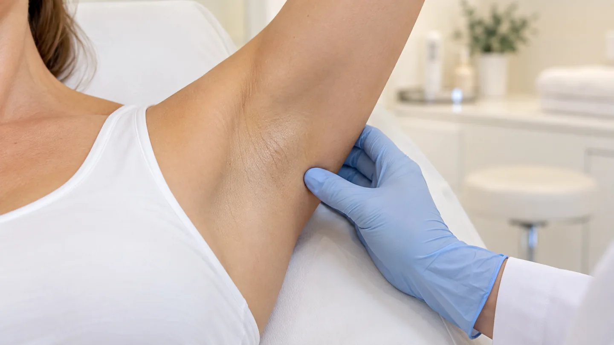

Hyperhidrose · Chemnitz
Übermäßiges Schwitzen
behandeln in Chemnitz
Wenn Schwitzen den Alltag bestimmt – die Kleiderwahl, das Händeschütteln, die Sitzung im Büro – ist das eine behandelbare Erkrankung und keine Frage der Disziplin.
Hyperhidrose ist eine Diagnose
Schwitzen ist normal und lebenswichtig. Von Hyperhidrose spricht man, wenn die Schweißproduktion weit über das hinausgeht, was der Körper zur Temperaturregelung braucht – unabhängig von Wärme und Anstrengung.
Betroffene kennen die Folgen gut: dunkle Flecken an der Kleidung, Wechselshirts in der Tasche, das Vermeiden von Situationen, in denen man auffällt. Der Leidensdruck ist häufig hoch und wird von außen regelmäßig unterschätzt.
Wir behandeln die Hyperhidrose der Achseln mit Botulinumtoxin. Der Wirkstoff unterbricht vorübergehend die Signalübertragung von den Nerven zu den Schweißdrüsen; die Schweißproduktion im behandelten Areal geht dadurch deutlich zurück. Die Wirkung setzt nach einigen Tagen ein und hält in der Regel mehrere Monate an, danach ist eine Wiederholung möglich. Vor der Behandlung klären wir, ob eine andere Ursache für das vermehrte Schwitzen in Frage kommt, die zuerst abgeklärt gehört.
Ein Einblick

KI-generiertes Symbolbild der Achselregion (Axilla).
So läuft es ab
Beratungsgespräch
Wir sprechen über Ausmaß, Dauer und Auswirkungen im Alltag – und schließen Ursachen aus, die anders behandelt gehören.
Aufklärung
Sie erfahren, wie die Behandlung abläuft, wie lange die Wirkung anhält und welche Nebenwirkungen möglich sind.
Behandlung
Der Wirkstoff wird mit sehr feinen Nadeln in mehrere Punkte des Areals eingebracht. Der Termin dauert nur wenige Minuten.
Kontrolle
Nach etwa zwei Wochen beurteilen wir das Ergebnis und legen fest, wann eine Auffrischung sinnvoll ist.
Wichtig zu wissen
Die hier beschriebenen Therapien sind verschreibungspflichtig. Ob sie für Sie in Frage kommen, lässt sich nur nach ärztlicher Untersuchung und Aufklärung entscheiden. Botulinumtoxin ist ein verschreibungspflichtiges Arzneimittel. Ergebnisse fallen individuell unterschiedlich aus, ein bestimmtes Ergebnis kann nicht zugesichert werden.
Wann eine Behandlung sinnvoll ist
Hyperhidrose – Ihre Fragen
Wie schnell wirkt die Behandlung?
Die Wirkung setzt meist nach einigen Tagen ein und ist nach etwa zwei Wochen vollständig ausgeprägt.
Wie lange hält sie an?
In der Regel mehrere Monate. Wie lange genau, ist individuell unterschiedlich; danach kann die Behandlung wiederholt werden.
Schwitze ich dann woanders mehr?
Behandelt wird ein klar begrenztes Areal. Der Körper reguliert seine Temperatur weiterhin über die übrige Hautfläche.
Ist die Behandlung schmerzhaft?
Es sind mehrere sehr feine Einstiche. Die meisten beschreiben das als gut auszuhalten.
Zahlt die Krankenkasse das?
Das hängt vom Einzelfall und Ihrem Versicherungsstatus ab. Wir sagen Ihnen vor der Behandlung, was auf Sie zukommt.
Behandeln Sie auch Hände oder Füße?
Unser Schwerpunkt ist der Achselbereich. Ob und wie sich andere Areale behandeln lassen, besprechen wir im Beratungsgespräch.
Termin vereinbaren
Sprechen Sie mit uns über Ihre Beschwerden – das Beratungsgespräch klärt, ob eine Behandlung in Frage kommt.
Leipziger Straße 137, 09113 Chemnitz · Mo – Do 08:00–18:00 · Fr 08:00–14:00
Hinweis: Diese Seite dient der allgemeinen Information und ersetzt keine ärztliche Beratung oder Diagnose. Angaben zu verschreibungspflichtigen Therapien dienen ausschließlich der Information. Behandlungsergebnisse sind individuell verschieden; ein bestimmtes Ergebnis kann nicht zugesichert werden. Ob und in welchem Umfang Ihre Krankenkasse eine Leistung übernimmt, klären wir im persönlichen Gespräch. Das Foto im Kopfbereich zeigt unsere Praxisräume in Chemnitz. Abgebildete Symbolbilder zeigen weder Patientinnen und Patienten unserer Praxis noch tatsächlich erzielte Behandlungsergebnisse.